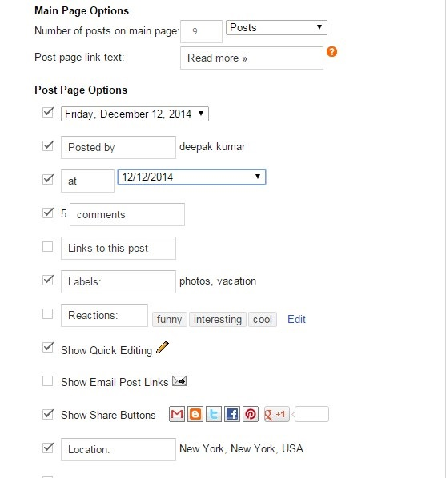

Installation
Layout
Widgets Content
HTML Content
Error 404
Masterpiece | Documentation [ Yotemplates.com ]
Thank you for Downloading our template. Please Read the documentation carefully, If you still have any query, Feel Free to contact us at yotemplate@gmail.com. Thank you so much!
- yotemplate@gmail.com Version 2.0.3
1. Backup & Uploading
- Unzip the Template.zip file.
- On Blogger Dashboard Click Template.
- Click on Download Full Template to keep your old template.
- Click Browse... button. Find where the “Masterpiece-premium.xml” file location.
- Then Click Upload.
- Edit mobile Preveiw. (follow images).
After installing the theme, there are minimun settings to make all widgets work fine in this template.
2. Blog Feed
- On Blogger Dashboard Click Settings.
- Click Other.
- In Site Feed > Allow Blog Feed Choose Full.
- Then Click Save settings.
Now you can Edit the meta tag Keywords of your blog. follow this steps
- On Blogger Dashbord Click Template.
- Click Edit HTML.
- Click Ctrl + F and Search for the following Code:
- Now Click This to generate Meta tag for your blog
- Change Your Meta Tag With The One You Generated From Jet Seo Tools
- Click Save template.
<meta content='Keywords_Here' name='keywords'/>
- Header Logo.
- Menu
- Popular Post
1. Setting Main Blog Part
- On Blogger Dashboard Click Layout.
- Click Edit on Blog Posts Widget.
- Change it to look like that image.
- Click Save.

2. Navigation Menu
- On Blogger Dashboard Click Template.
- Click Edit HTML.
- Press Crtl+F.
- And search 'Menu bar'
- And find This Code:
| Change | Please Change the links according to your need,For links Just replace the # with url and Change the Name of the link |
3. About Author
- On Blogger Dashboard Click Layout.
- Click Add a Gadget.
- Choose HTML/Javascript.
- Add the following Code:
<div class="widget-content">
<div class="My-pix">
<img alt="My Photo" src="http://1.bp.blogspot.com/-BoCkJc9x0OQ/VV8p4CPfruI/AAAAAAAAAyA/OFYxwQz69K0/s250-c/author-img.jpg" />
</div>
<dl class="profile-datablock">
<div class="bt_author_bio">
<h3><a href="http://www.yotemplates.com" title="Zarja">Zarja Kij</a></h3>
<dd class="profile-textblock">Far far away, behind the word mountains, far from the countries Consonantia….
<br/>
<img src="http://1.bp.blogspot.com/-xrD5EdyFRKY/VdmQ1qZpJYI/AAAAAAAADAA/uth4f04JQEE/s1600/sig%25289%2529.png" style="width:30%;height: auto;" />
</dd>
</div></dl></div>
Now all You Have to do is, Change the Image URLs with Your Desired Image URLs, And Social Links URLs (href=#) with Your Social Sites links
NOTE:
If You Are Still Facing some Problems, Fill Free to ask for the assistance.
4. Popular Post Carousel

- On Blogger Dashboard Click Layout.
- Click Add a Gadget.
- Choose HTML/Javascript.
- Copy the following Code:
<script type="text/javascript"> var nopost = 10; </script> <script src="/feeds/posts/default/-/LABEL_NAME?alt=json-in-script&callback=galposts"></script>
| LABEL_NAME | Change it with the label name of posts to be shown. |
| numpostsq | Number of posts to be shown. It must be lower or equal to the number of posts that have the label name. |

- On Blogger Dashboard Click Layout.
- Click Add a Gadget.
- Choose HTML/Javascript.
- Copy the following Code:
Go to this url Facebook Like Box
| Facebook Page Url | Add Your FB Url in box |
| Color Scheme | Choose light color scheme |

- On Blogger Dashboard Click Layout.
- Click Add a Gadget.
- Choose HTML/Javascript.
- Copy the following Code:
<script type="text/javascript"> var nopostb = 5; </script> <script src="/feeds/posts/default/-/LABEL_NAME?alt=json-in-script&callback=blockposts"></script>
| LABEL_NAME | Change it with the label name of posts to be shown. |
| nopostb | Number of posts to be shown. It must be lower or equal to the number of posts that have the label name. |

- On Blogger Dashboard Click Layout.
- Click Add a Gadget.
- Choose HTML/Javascript.
- Copy the following Code:
<script type="text/javascript"> var nopostr = 5; </script> <script src="/feeds/posts/default?alt=json-in-script&callback=recentposts"></script>
| nopostr | Number of posts to be shown. It must be lower or equal to the number of posts in your blog. |

- On Blogger Dashboard Click Layout.
- Click Add a Gadget.
- Choose HTML/Javascript.
- Copy the following Code:
<div id="random-posts"> <script style="text/javascript"> var numposts_gal = 4; </script> <script src="/feeds/posts/default?orderby=published&alt=json-in-script&callback=showgalleryposts&max-results=99"></script> </div>
| numposts_gal | Number of posts to be shown. |

- On Blogger Dashboard Click Layout.
- Click Add a Gadget.
- Choose HTML/Javascript.
- Copy the following Code:
<div id="comments-container"></div>
<script>
var cm_config = {
ct_id: "comments-container",
max_result: 5
};
</script>
| max_result | Number of recent comments to be shown. |

- On Blogger Dashboard Click Layout.
- Click Add a Gadget.
- Choose HTML/Javascript.
- Copy the following Code:
<script type="text/javascript"> var numpostso = 4; var classo = "gallery_widget gallery_widget_posts owl-carousel owl-theme"; var ido = "footer_carousel"; </script> <script src='/feeds/posts/default/-/slideshow?alt=json-in-script&callback=ocarousel' type='text/javascript'/></script>
| slideshow | Add This label name to posts you want them to be shown. |
| numpostso | Number of posts to be shown. It must be lower or equal to the number of posts that have the label name slideshow. |
5. Side Bar Social Icons
- On Blogger Dashboard Click Layout.
- Click Add a Gadget.
- Choose HTML/Javascript.
- Copy the following Code:
<div class="social-links-wrap">
<ul class="social-links clearfix">
<li><a href="http://www.facebook.com/yotemplates" title="Facebook" target="_blank"><i class="fa fa-facebook"></i></a>
</li>
<li><a href="http://www.twitter.com/yotemplates" title="Twitter" target="_blank"><i class="fa fa-twitter"></i></a>
</li>
<li><a href="#" title="Flickr" class="blu_flickr_background_hover blu_flickr_border_hover" target="_blank"><i class="fa fa-flickr"></i></a>
</li>
<li><a href="#" title="Instagram" target="_blank"><i class="fa fa-instagram"></i></a>
</li>
<li><a href="#" title="Dribbble" target="_blank"><i class="fa fa-dribbble"></i></a>
</li>
</ul></div>
| # | Change social links with your links. |

6. Instagram Widget
- On Blogger Dashboard Click Template.
- Click Edit HTML.
- Press Crtl+F.
- And search 'coffeescript'
- And find This Code:
Now change your instagram userId and accessToken,As shown in the Above demonstration
NOTE:If You Are Still Facing some Problems, Feel Free to ask for the assistance.
7. Slider/Carousel Setting
- On Blogger Dashboard Click layout.
- And Follow the instructions given the below:

Footer Social Links
you have to edit the social links manually.
Demo Slider

- On Blogger Dashbord Click Template.
- Click Edit HTML.
- Click Ctrl + F and Search for the following Code in the bottom
- just replace the # with your social url Save template.
- And delete the whole li which you don't want to use. Save template.
<ul class='contact-social'> <li><a href='#'><i class='fa fa-facebook'/> Facebook</a></li> <li><a href='#'><i class='fa fa-twitter'/> Twitter</a></li> <li><a href='#'><i class='fa fa-google-plus'/> Google+</a></li> <li><a href='#'><i class='fa fa-dribbble'/> Dribbble</a></li> <li><a href='#'><i class='fa fa-linkedin'/> Linkedin</a></li> <li><a href='#'><i class='fa fa-instagram'/> Instagram</a></li> </ul>
You can change the only color of the template using blogger template designer.
Go to Blogger Dashboard -> Template -> Customize and then advance
Change the color value here and link color can also be change